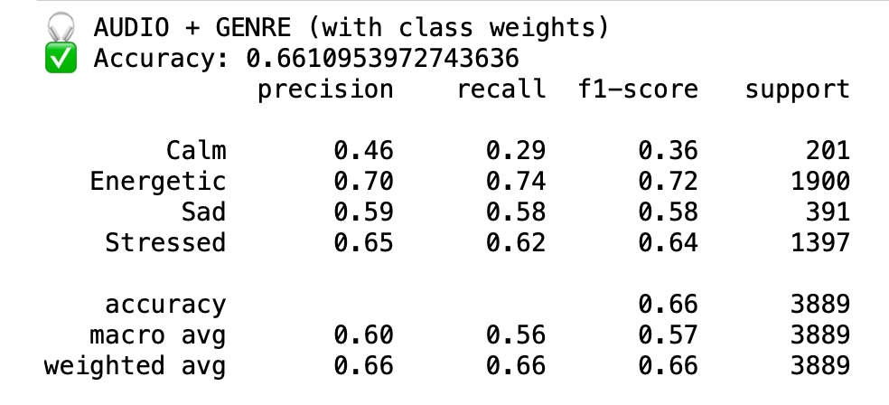
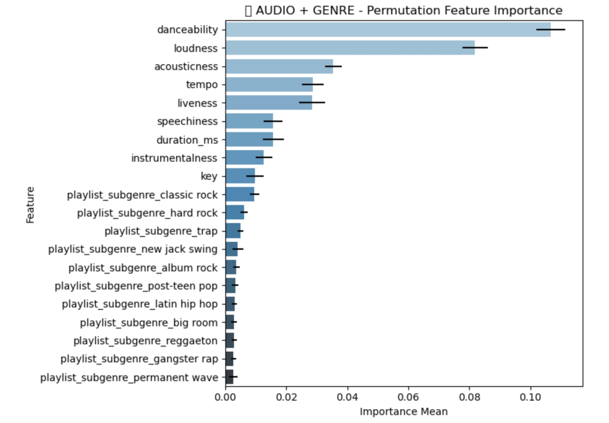
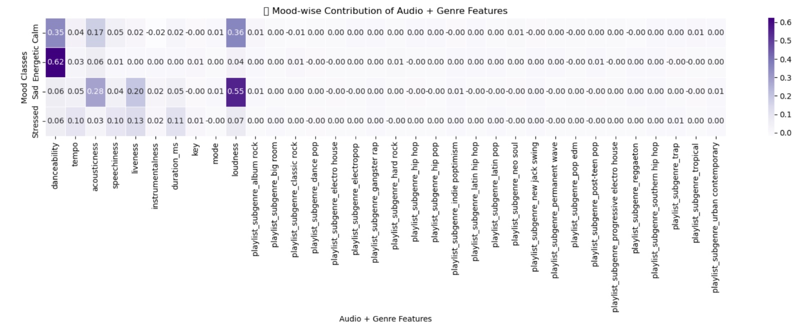
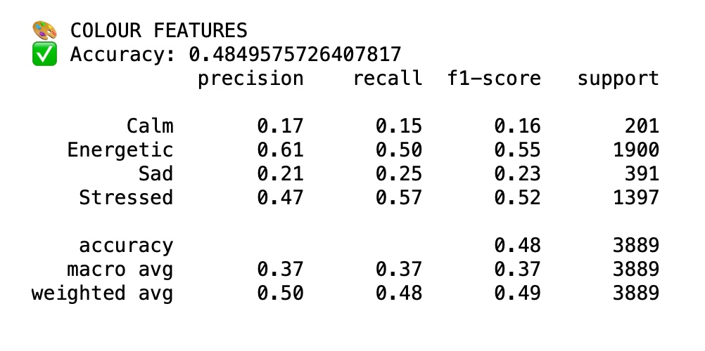
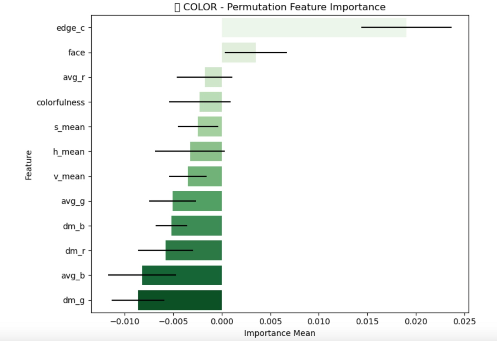
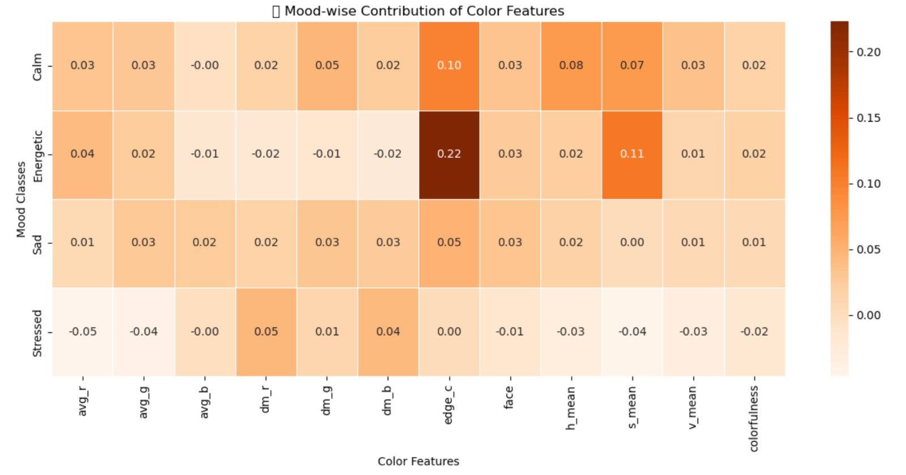
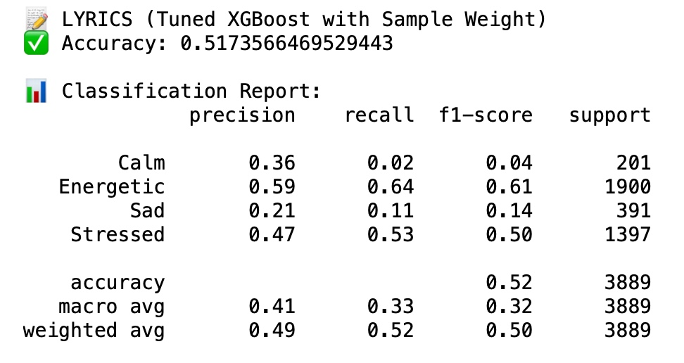
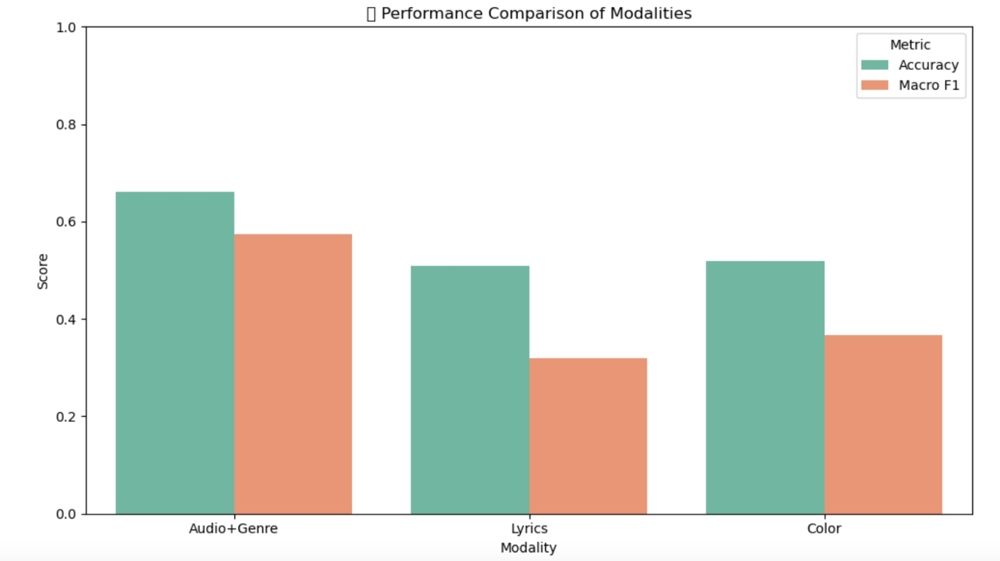
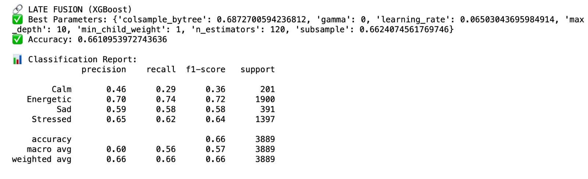
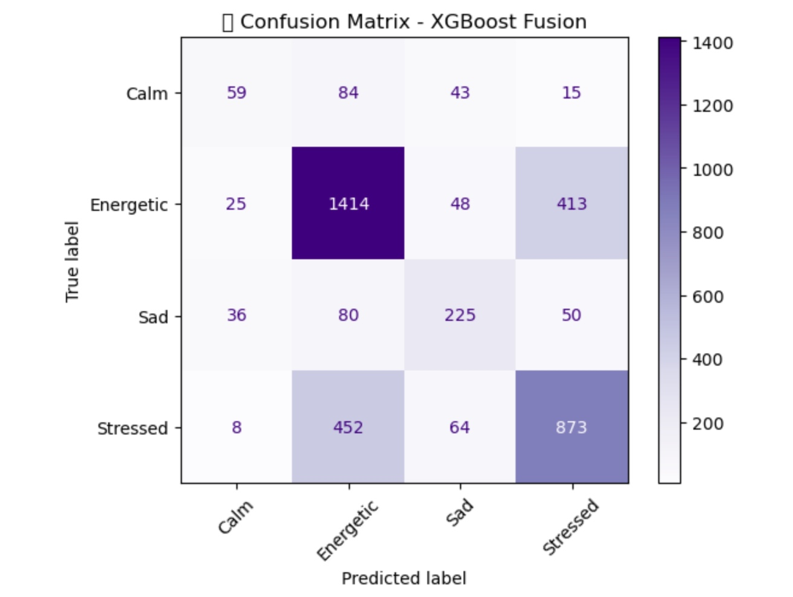

This project presents a multimodal machine learning approach designed to predict the emotional state conveyed by songs. It incorporates three different types of data: audio, visual, and textual. Each data modality is individually processed and modeled, and their outputs are combined using a late fusion strategy. This approach aims to capture the emotional dimension of music in a more comprehensive way.
The ultimate goal of the model is to classify songs into one of four mood categories derived from Thayer’s Mood Model: Energetic, Calm, Sad, and Stressed. Integrating complementary emotional cues from different modalities plays a key role in improving prediction performance.
As seen in the figure above, there is a noticeable imbalance in the distribution of mood classes. Certain classes, such as Energetic and Stressed, are more represented than others. To address this issue, class weighting was applied during model training by assigning higher weights to underrepresented classes via the class_weight parameter. This adjustment helps the model avoid bias toward majority classes and improves its ability to generalize across all mood categories.
For each feature modality, a separate model was developed. In the case of audio features, several classification algorithms were tested. Among them, XGBoost, optimized using RandomizedSearch and incorporating class weight adjustments to handle class imbalance, yielded the best performance. This configuration achieved the highest macro-averaged F1-score of 0.57, while also reaching a moderate accuracy of 0.66.
The evaluation metrics of the selected model are presented above.
The bar chart above illustrates the permutation-based feature importance for the audio-based model, which includes both acoustic features and subgenre metadata. According to the analysis: Danceability and loudness are the most influential features in predicting the mood of a song. These features directly reflect the energy and rhythmic characteristics of music, making them critical indicators in the classification process. Other relevant audio features such as acousticness, tempo, liveness, and speechiness also contribute meaningfully, indicating that multiple sound dimensions play a role in emotional perception. Additionally, certain subgenre categories (e.g., classic rock, hard rock, trap) show modest but measurable importance, suggesting that genre-related context provides complementary information in mood prediction. This analysis supports the effectiveness of combining both low-level acoustic descriptors and high-level metadata for a more robust understanding of musical emotion.
The heatmap above breaks down how each audio and genre feature contributes to the prediction of individual mood classes. It reveals that: Danceability plays a dominant role in predicting Sad and Calm moods, with particularly high relevance for Sad (0.62). Loudness is especially influential in identifying the Energetic class (0.55), aligning with the expectation that energetic music tends to be louder. Acousticness and speechiness show varying contributions across classes, particularly in differentiating Calm and Sad moods. Most subgenre features show minimal direct impact on specific classes, though their inclusion contributes to the overall performance. This mood-wise analysis highlights how specific features are more aligned with certain emotional tones, reinforcing the benefit of interpreting features in a class-sensitive manner.
A separate model was developed for the visual features extracted from album cover images. Among the evaluated algorithms, Random Forest provided the most promising results. To improve performance and address class imbalance, both class weighting and RandomizedSearch for hyperparameter tuning were applied. The final model achieved an accuracy of 0.48 and a macro-averaged F1-score of 0.37.
The evaluation metrics of the selected model are presented above.
The bar chart above presents the permutation-based feature importance for the visual model, which utilizes various color and composition descriptors extracted from album cover images. The most informative features were edge count (edge_c) and presence of a face (face), indicating that structural or human-related visual cues may play a notable role in mood perception. Among color features, attributes like average red (avg_r), colorfulness, and HSV means (hue, saturation, value) contributed moderately to the classification process. Some features such as dominant channel values (dm_*) and average RGB values showed lower or even negative importance scores, suggesting that they may not provide strong discriminative power in this context. Overall, the analysis suggests that compositional and facial elements may have greater influence than raw color statistics alone when interpreting emotional signals from album visuals.
The heatmap above illustrates how individual color-related visual features contribute to predicting each mood class. The edge count (edge_c) stands out, particularly for the Energetic class, with the highest contribution value (0.22), suggesting that images with sharper or more detailed edges are strongly associated with energetic moods. The presence of a face (face) is most relevant for the Calm class (0.10), potentially reflecting a visual-emotional link through human representation. Subtle color statistics such as dominant red (dm_r), saturation mean (s_mean), and brightness (v_mean) contribute moderately across Calm and Sad moods. On the other hand, many features have near-zero or negative influence on the Stressed class, indicating that color features alone may be less effective in capturing this mood. This per-class analysis offers a more nuanced understanding of how different visual cues relate to specific emotional states in music.
For the textual features derived from song lyrics, the most effective model was found to be XGBoost, tuned using RandomizedSearch and enhanced with class weight adjustments to mitigate the effects of class imbalance. This model demonstrated solid potential in capturing emotional patterns within the lyrics. It achieved a preliminary accuracy of 0.52 and a macro-averaged F1-score of 0.32.
The evaluation metrics of the selected model are presented above.
After developing separate models for each modality—audio, visual, and textual—a late fusion strategy was applied to integrate their outputs. Instead of concatenating raw features, the predicted class probabilities from the unimodal models were used as input features for a final classifier. For this fusion model, XGBoost was employed due to its flexibility and compatibility with probabilistic inputs. The model was trained on a validation set containing the output probabilities from each unimodal model, allowing it to learn a weighted combination strategy based on the strengths of each modality. This approach enabled a structured and interpretable way of combining different sources of information within a unified decision-making process.
The bar chart above compares the classification performance of each individual modality—Audio+Genre, Lyrics, and Color—based on two metrics: Accuracy and Macro F1-score. The Audio+Genre modality achieved the highest overall performance across both metrics, with the strongest macro-averaged F1-score, indicating better balance across mood classes. The Color model exhibited moderate accuracy, comparable to the Lyrics model, but its F1-score was slightly higher, suggesting better performance on underrepresented classes. The Lyrics model, while incorporating meaningful textual information, had the lowest F1-score, reflecting the challenge of capturing emotional nuance from lyrics alone in a multiclass setting.
Evaluation results following the late fusion step are shown above.
The confusion matrix above shows the class-wise prediction performance of the final model obtained through late fusion with XGBoost. The model performs strongly on the Energetic class, with 1,414 correct predictions, but tends to confuse Stressed with Energetic, as seen in the 452 misclassified instances. Calm and Sad classes show a more scattered distribution, with substantial confusion especially between Calm–Energetic and Sad–Energetic. The Stressed class shows moderate performance, with 873 correct predictions but also notable misclassification into the Energetic class. Overall, the matrix reflects the imbalanced and overlapping nature of mood labels, where classes with similar emotional tones (e.g., Energetic–Stressed) are harder to separate, even in a fusion-based setup.
As a result of the late fusion process, it was observed that the final model was primarily influenced by audio-related features, while lyrical and visual features such as lyrics and album cover characteristics contributed less effectively to mood classification.
← Back to Home